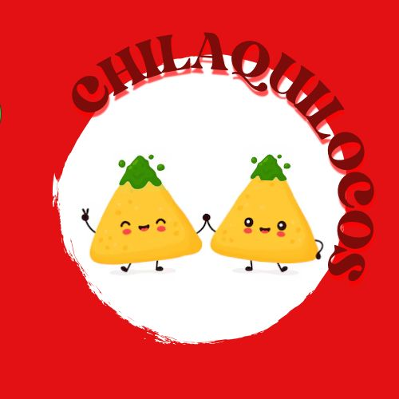

¡Bienvenidos a Chilaquilocos! Aqui nos especializamos en llevar el sabor auténtico de los chilaquiles mexicanos a tu mesa. Somos un negocio apasionado por la cocina tradicional, donde cada plato se prepara al momento con ingredientes frescos, salsa casera y ese toque especial que solo da el amor por la comida. Ya sea con pollo, bistec, arrachera, aquí encontrarás el sabor perfecto para empezar tu día con energía. Nuestro objetivo es ofrecer una experiencia deliciosa, rápida y con ese calor de hogar que hace que siempre quieras volver ¡Ven a probar los chilaquiles que todos están recomendando
Nuestro objetivo
En Chilaquilocos, queremos que disfrutar de unos buenos chilaquiles sea tan fácil como antojártelos. Por eso creamos esta página: para que puedas ver todo lo que ofrecemos, elegir tu combinación favorita y pedir rápido, sin complicaciones.
Queremos que tengas una experiencia deliciosa desde el primer clic hasta el último bocado. Aquí encontrarás nuestro menú completo, fotos reales de nuestros platillos y un sistema de pedido sencillo, rápido y seguro. ¡Así, solo te preocupas por elegir nuestras deliciosas opciones!
Materiales e Ingredientes
| Materiales
| Ingredientes
|
| Sartén grande
| Tortillas de maíz
|
| Cuchillo
| Aceite vegetal
|
Tabla de cortar
| Cebolla picada
| Colador
| Dientes de ajo
|
| Espátula
| Jalapeño o chile verde
|
| Tazón grande
| Tomate
|
| Platos
| Caldo de pollo
|
| Tabla para picar
| Noursiza
|
Opciones que puedes pedir:
Chilaquiles sin proteina
Chilaquiles con pollo
Chilaquiles con bistec
Chilaquiles con arrachera
Tambien puedes pedir con cebolla, crema o queso
Precios
| Proteina
| Costo
|
| Sin proteina
| $68
|
| Pollo
| $88
|
Bistec
| $88
| Arrachera
| $95
|
|
¿Cómo los elaboramos?
En este link te mostraremos como es la preparación de nuestros deliciosos chilaquiles, es un video corto pero muy bien explicado para que entiendas el proceso
Contáctanos (pedidos aquí)